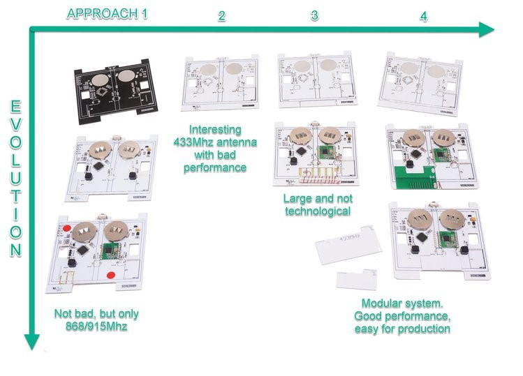
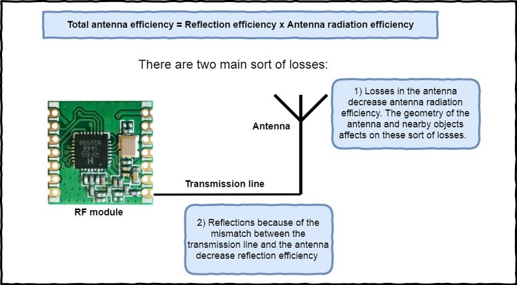
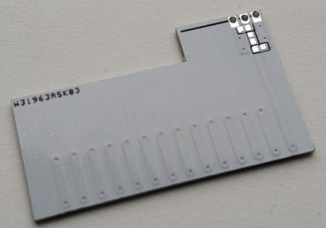
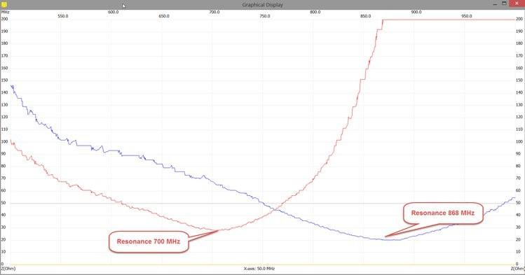
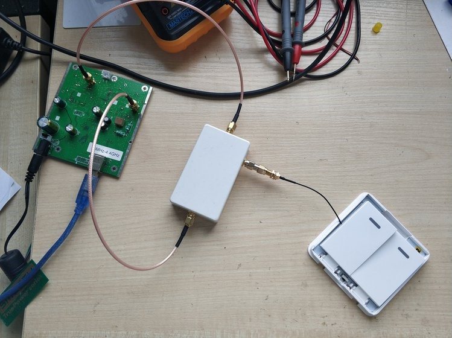
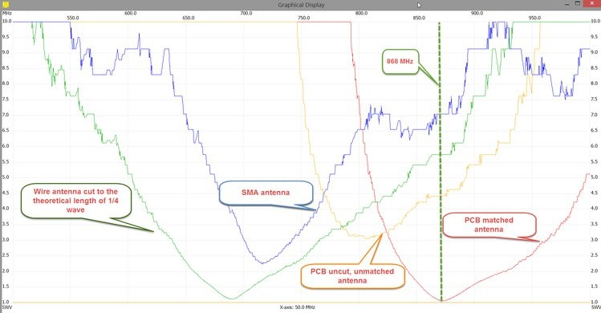
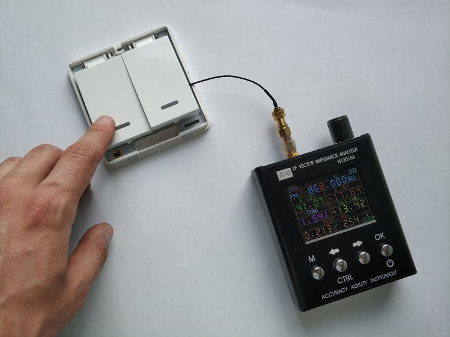
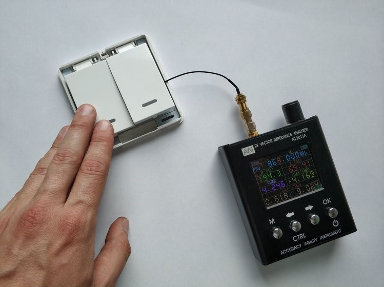
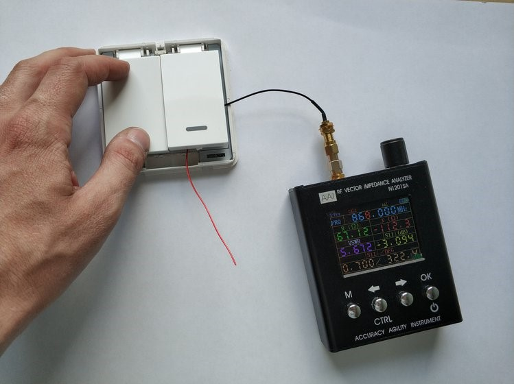
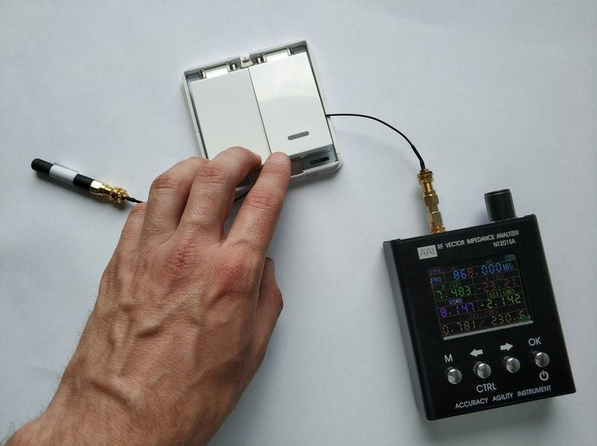

EasySwitchBox Antenna Efficiency Tuning

The number one challenge for compact radio-controlled device creation is PCB antenna efficiency tuning. We could use antennas with SMA connector feeder for an easy workaround, but they are bulky and hard to put inside an enclosure. Most DIY projects use wire antennas. There are lots of pros with this solution, but also many cons. Someone prefer often it is because it costs nothing, and it works in most cases! However, the cons are that it does not work as well and sometimes does not work at all. Spending hours trying to put the antenna into the device compartment is a real pain. Then, when you finally get everything properly packed inside, the device transmits nothing. Agrhh, all the signals went into the nearby ground plane or the wire starts resonating at a completely different frequency. Coiled antennas are like PCB antennas, requiring the counterpoise ground plane. They require efficiency tuning similar to PCB antennas. PCB antennas are more compact and easy to produce. 
PCB antenna efficiency tuning turns out to be a difficult equation for many creators. Easier to design the device and antenna as one piece from the very beginning. Let’s say you have the battery-powered device, enclosure, and antenna dimensions determined. The connected thing is being built around the antenna’s necessary counterpoise ground plane and gap between them. The counterpoise ground plane of the device is an essential part of the antenna. 
Then tuning starts:
We should increase antenna radiation efficiency and match transmitter with antenna to increase reflection efficiency. Antenna radiation efficiency is maximum when antenna resonance frequency is equal to the transmission of radio frequency. We can find the resonance frequency as the minimum of the antenna impedance. We used prototype antenna modules with longer antennas, so we could cut it to decrease resonance frequency.

The graph below depicts the impedance vs frequency curve of our antenna module before resonance tuning (red line) and after cutting the antenna to the appropriate length (blue line).

The second step is to estimate reflection efficiency. It is SWR measurement. If the transmitter matched with antenna SWR = 1 then 100% of radio power will be transmitted to the antenna. If SWR = 2 then 89% of power is transmitted, SWR = 3 is equal to 75% of transmitted power and so on. The rule of thumb is achieving SWR less than 2.

The chart below is a comparison of SWR for the easySwitchBox with different antennas.

Green line is a simple 9cm wire. Interesting thing SWR is perfect, but the frequency is not 868Mhz because the ground plane and wire position are far from the ideal monopole. Matched PCB antenna:

Unmatched PCB antenna:

Wire antenna:

Stock SMA antenna:

Measured followed distance for low power RFM69CW module:
• Unmatched antennas range is 200 meters (656 ft.)
• Wire antenna range is 220 meters (720 ft.)
• Matched antennas range is 350 meters (1150 ft.)
• SMA antenna range is 300 meters (985 ft.)